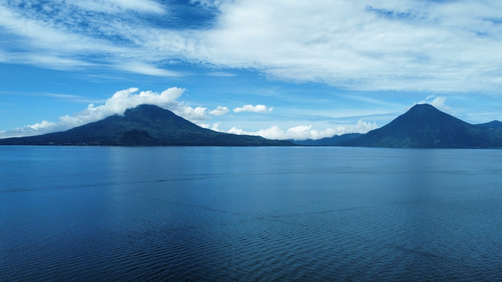

Guatemala
Tierra de volcanes
Coffee grown in the shadow of volcanoes, on mineral-rich slopes around Antigua and Lake Atitlán. Since the 1850s it has shaped the highlands — and the mornings of every Guatemalan kitchen, where coffee meets fresh tortillas at dawn.